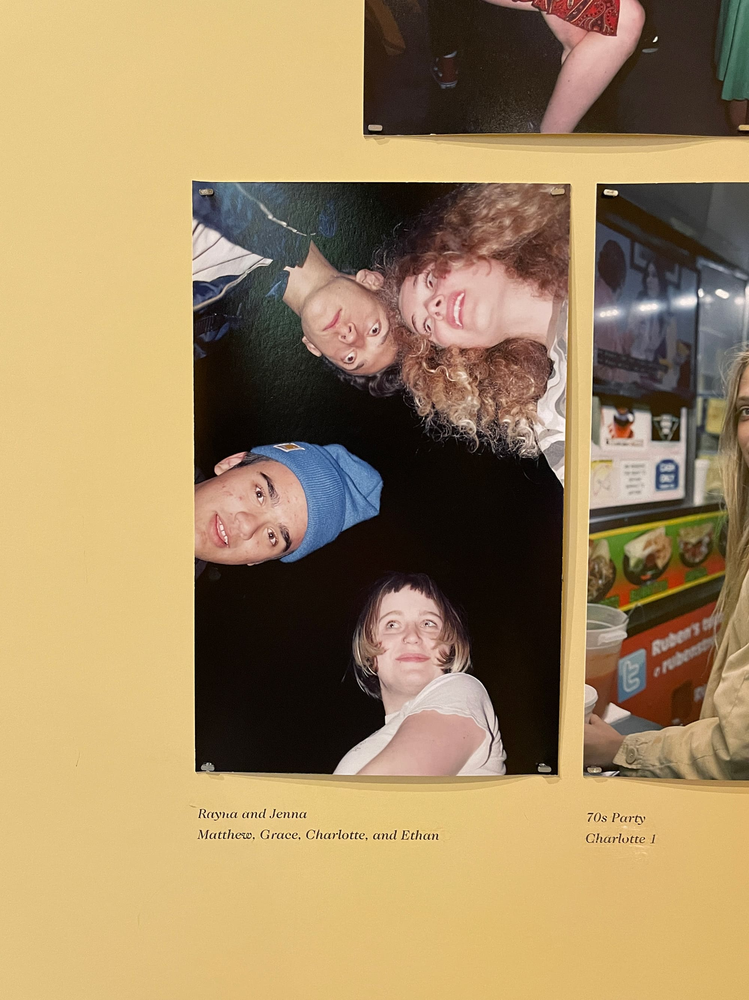
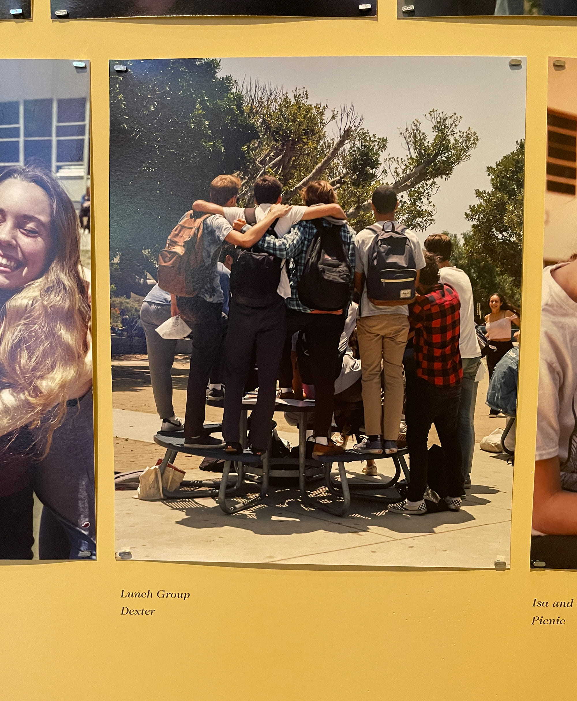
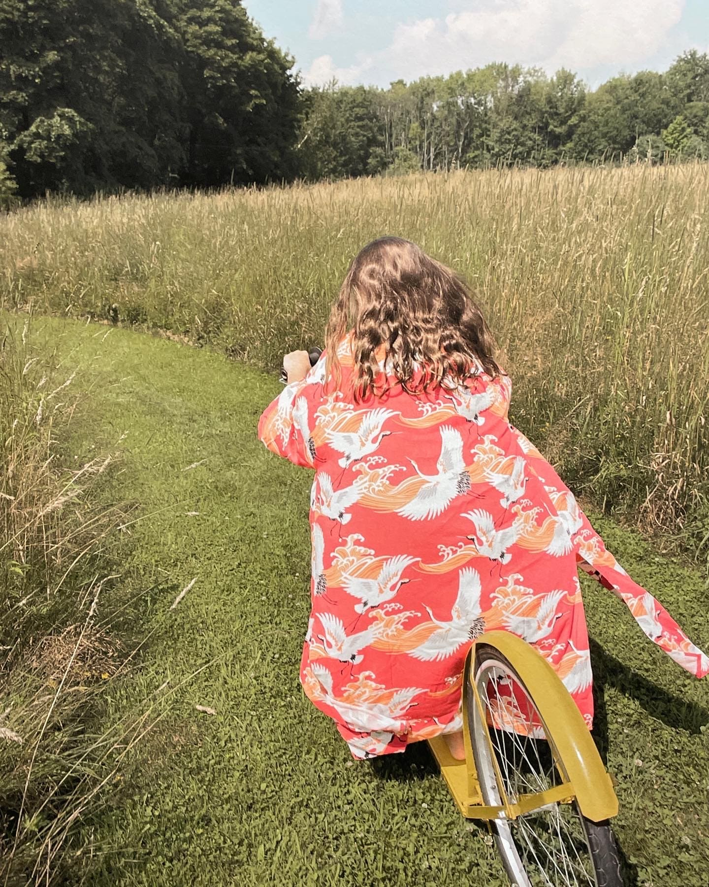
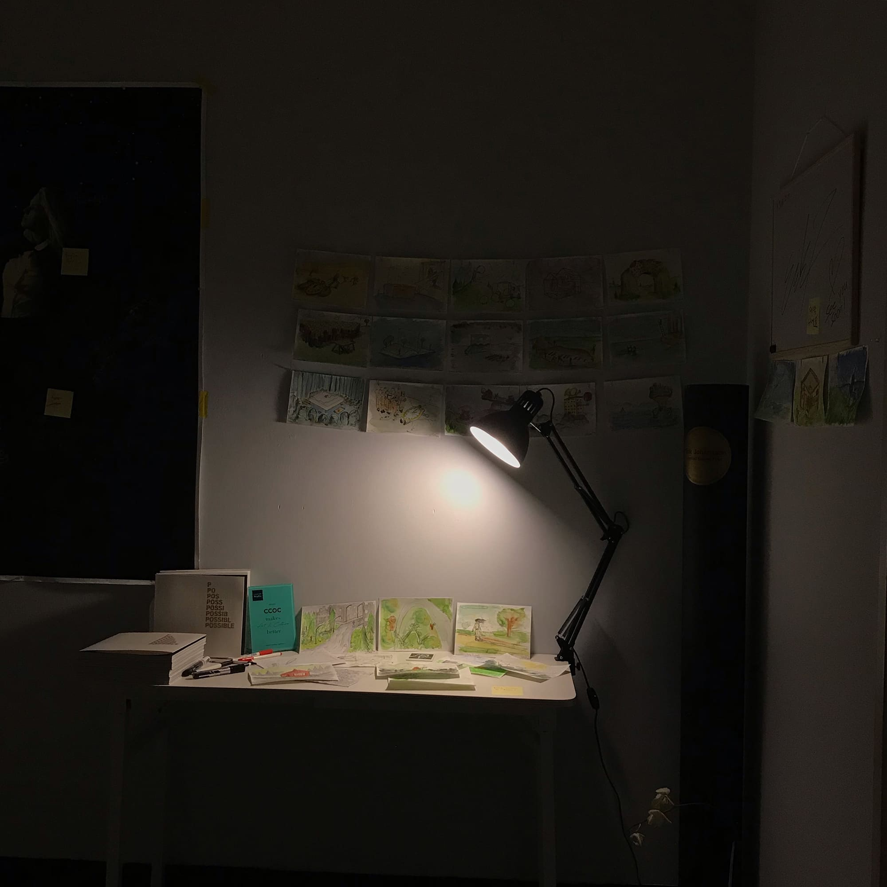
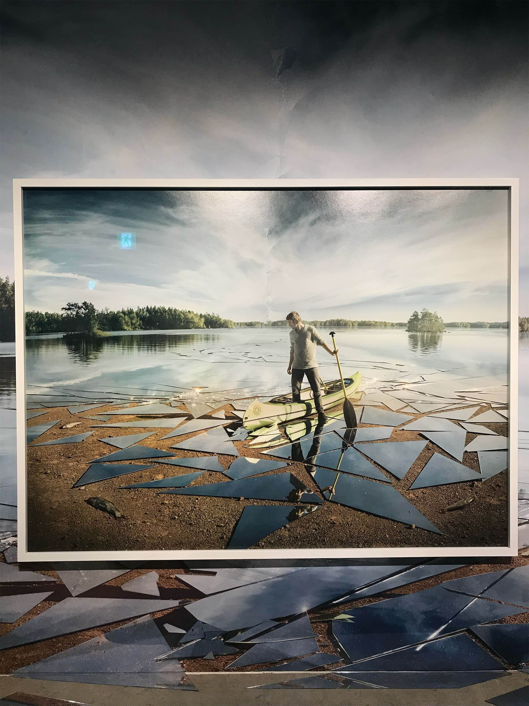
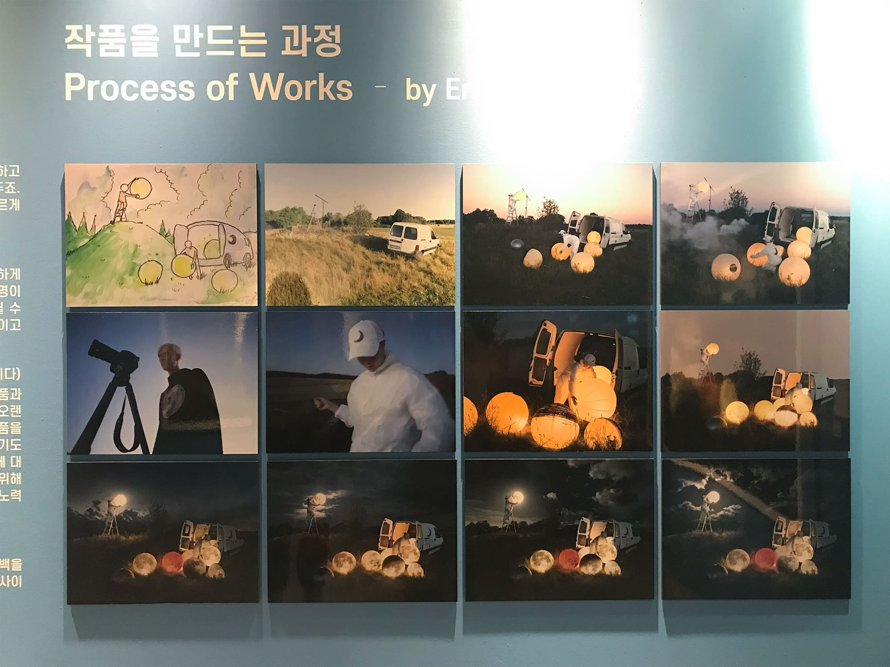

사진가
니코 비 영, 지미 마블
에릭 요한슨
관찰

!

❤︎

❤︎

❤︎

!

~
기록
어쨌든, 사랑
DATE. 2022.10.07
디뮤지엄
가게 된 계기
디자인팀 문화생활
감상평
같은 주제를 가지고 전혀 다른 스타일의 작품들. 작가마다 어울리는 공간과 컬러를 구현해 몰입이 잘 되었음
그중에 니코 비 영 사진가의 작품이 젤 좋았다. 나도 친구들 가득 찍어야지
니코 비 영
젊음과 일상의 모습을 진솔하게 담아내는 포토그래퍼
에릭 요한슨 사진전
DATE. 2019.06.28
예술의전당 한가람미술관
가게 된 계기
문화생활 좋아하는 ㅎㅈ이가 가자고 함
감상평
첫 사진전
찍을 사진을 기획하는 과정이 재밌었다. 난 그냥 찍을 뿐인데!
포토샵으로 보정한 히스토리를 같이 보여 줘 새로웠음 굿즈로 키링 샀는데 가방에 아직 달려 있지만 동생이 메고 다님
에릭 요한슨
우리를 제한시키는 유일한 것은 우리의 상상력입니다.